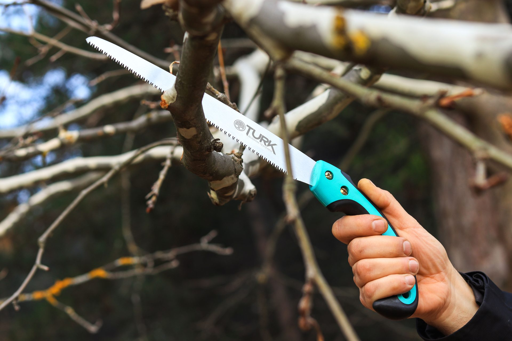
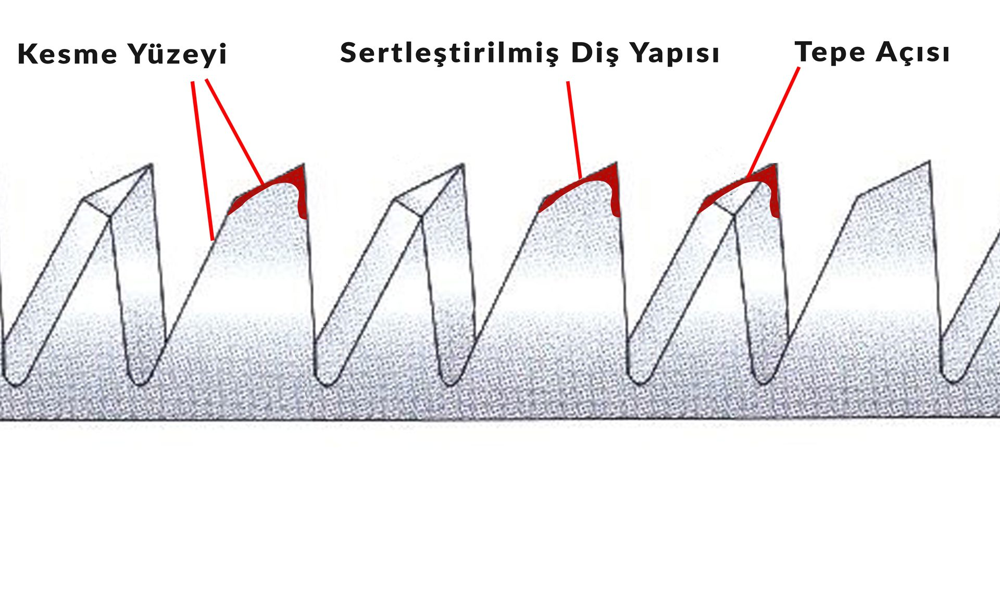
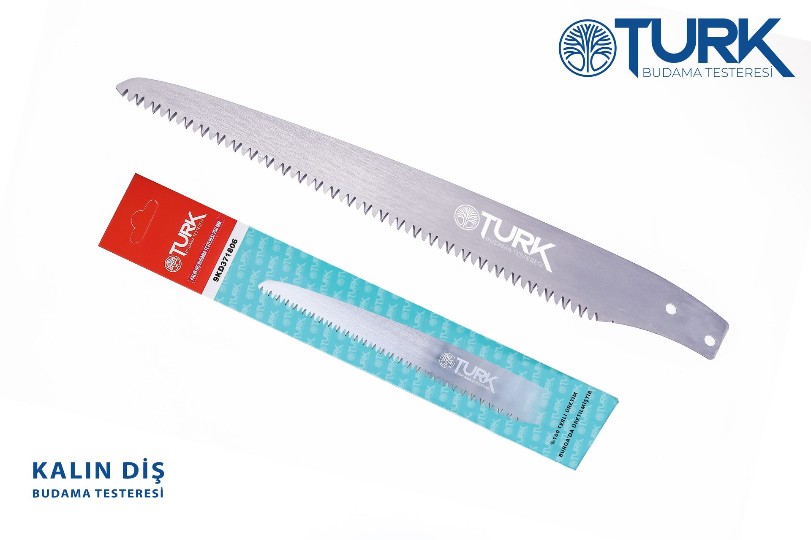

Rahat kesim sağlar
Dişlerin yapısı kesilen parçayı dışarı atar. Testere sıkışmadan daha rahat ilerler.
OTURK testereler, sağlam çelik yapısı ve optimize diş geometrisi ile zorlu kesimlerde yüksek performans sunar.

Orta Diş (Genel Kullanım)
Çoğu budama işi için dengeli bir seçenektir. Orta kalınlıktaki dallarda rahat ilerler, zorlamadan kesim yapar. Kontrolü kolaydır, günlük kullanım için idealdir.

Kalın Diş (Güçlü Kesim)
Kalın, sert ve kuru dallarda rahat kesim sağlar. Geniş diş yapısı sayesinde her çekişte daha hızlı ilerler. Meyve ağaçları gibi kalın dallarda işi kolaylaştırır.

İnce Diş (Hassas Kesim)
İnce ve taze dallarda temiz bir kesim yapar. Sık diş yapısı sayesinde dalı yırtmaz, düzgün bir iz bırakır. Şekil verme ve hassas budama için idealdir.

Teknoloji
Özel diş yapısı sayesinde testere daha rahat keser, daha az zorlanır. Sivri uçlar oduna kolay girer, dişlerin yapısı talaşı dışarı atar. Bu sayede kesim daha akıcı olur ve testere daha uzun süre keskin kalır.

Dişlerin yapısı kesilen parçayı dışarı atar. Testere sıkışmadan daha rahat ilerler.
Dişlerin uç kısmı daha sağlamdır. Bu sayede testere uzun süre keskin kalır.
Dişlerin formu sayesinde her harekette daha fazla kesim yapılır. Bu da işi hızlandırır.
Yüksek karbonlu çelik sayesinde testere hem serttir hem esnekliğini korur. Kolay körelmez, uzun süre kullanılır.
Ergonomik sap yapısı ele oturur. Uzun kullanımda bile yorulmadan kontrol sağlar.
İnce, orta ve kalın diş seçenekleriyle ince daldan kalın dala kadar doğru kesimi yapar.
Testere dala kolay girer, takılmaz. Aynı iş daha kısa sürede biter.
Üç model, tek 250 mm standardı. Doğru testereyi seç.

Hızlı kesim — meyve ağaçları için.
Çok yönlü — zeytin ağaçları için.

Hassas — ince zeytin dalları için.
Hakkımızda
OTURK, Bursa’da üretim yapan yerli bir testere markasıdır. Her ürün, sahada çalışan ustaların deneyimiyle şekillenir. Bu yüzden sadece anlatılmaz, kullanıldıkça fark edilir.
İletişim